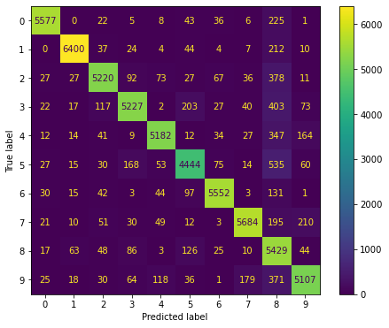
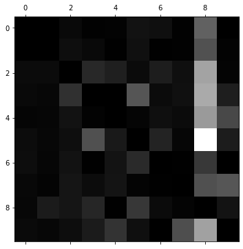
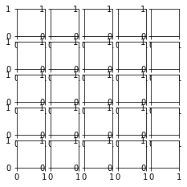
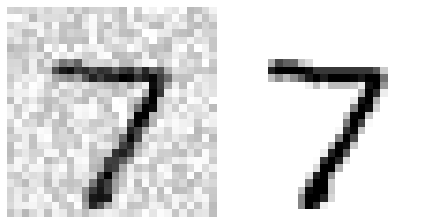
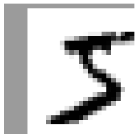
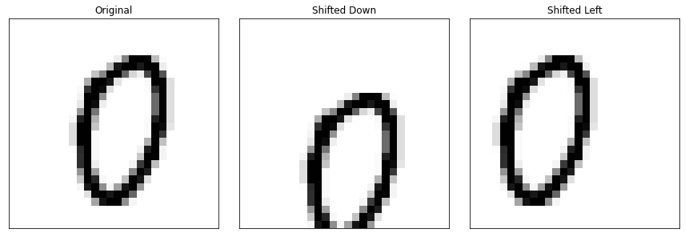

分类
Contents
分类¶
import matplotlib.pyplot as plt
import numpy as np
import pandas as pd
import matplotlib as mpl
MNIST¶
# from sklearn.datasets import fetch_openml
# X, y = fetch_openml('mnist_784', version=1, return_X_y=True, data_home='data')
# np.savez(file="../../datasets/handson/mnist_784.npz", X=X, y=y)
mnist_784 = np.load('../../datasets/handson/mnist_784.npz', allow_pickle=True)
X, y = mnist_784['X'], mnist_784['y']
X.shape
(70000, 784)
y.shape
(70000,)
np.sqrt(X.shape[1])
28.0
some_digit = X[0]
plt.imshow(some_digit.reshape(28, 28), cmap=mpl.cm.binary)
plt.axis("off")
plt.show()
y[0]
'5'
def plot_digit(data, ax):
image = data.reshape(28, 28)
ax.imshow(image, cmap=mpl.cm.binary, interpolation="nearest")
ax.axis("off")
_, axes = plt.subplots(10, 10, figsize=(6, 3), constrained_layout=True)
example_images = X[:100]
for ind, ax in enumerate(axes.flatten()):
img_data = example_images[ind]
plot_digit(img_data, ax)
plt.show()

y = y.astype(np.int32)
X_train, X_test, y_train, y_test = X[:60000], X[60000:], y[:60000], y[60000:]
二元分类器¶
y_train_5 = (y_train == 5)
y_test_5 = (y_test == 5)
y_train_5 = y_train_5.ravel()
y_test_5 = y_test_5.ravel()
from sklearn.linear_model import SGDClassifier
---------------------------------------------------------------------------
ModuleNotFoundError Traceback (most recent call last)
Input In [12], in <cell line: 1>()
----> 1 from sklearn.linear_model import SGDClassifier
ModuleNotFoundError: No module named 'sklearn'
sgd_clf = SGDClassifier(max_iter=1000, tol=1e-3, random_state=42)
sgd_clf.fit(X_train, y_train_5)
---------------------------------------------------------------------------
NameError Traceback (most recent call last)
Input In [13], in <cell line: 1>()
----> 1 sgd_clf = SGDClassifier(max_iter=1000, tol=1e-3, random_state=42)
2 sgd_clf.fit(X_train, y_train_5)
NameError: name 'SGDClassifier' is not defined
sgd_clf.predict([some_digit])
---------------------------------------------------------------------------
NameError Traceback (most recent call last)
Input In [14], in <cell line: 1>()
----> 1 sgd_clf.predict([some_digit])
NameError: name 'sgd_clf' is not defined
from sklearn.model_selection import cross_val_score
---------------------------------------------------------------------------
ModuleNotFoundError Traceback (most recent call last)
Input In [15], in <cell line: 1>()
----> 1 from sklearn.model_selection import cross_val_score
ModuleNotFoundError: No module named 'sklearn'
cross_val_score(sgd_clf, X_train, y_train_5, cv=3, scoring="accuracy")
---------------------------------------------------------------------------
NameError Traceback (most recent call last)
Input In [16], in <cell line: 1>()
----> 1 cross_val_score(sgd_clf, X_train, y_train_5, cv=3, scoring="accuracy")
NameError: name 'cross_val_score' is not defined
from sklearn.model_selection import StratifiedKFold
from sklearn.base import clone
---------------------------------------------------------------------------
ModuleNotFoundError Traceback (most recent call last)
Input In [17], in <cell line: 1>()
----> 1 from sklearn.model_selection import StratifiedKFold
2 from sklearn.base import clone
ModuleNotFoundError: No module named 'sklearn'
skfolds = StratifiedKFold(n_splits=3, shuffle=True, random_state=42)
for train_index, test_index in skfolds.split(X_train, y_train_5):
clone_clf = clone(sgd_clf)
X_train_folds, y_train_folds = X_train[train_index], y_train_5[train_index]
X_test_fold, y_test_fold = X_train[test_index], y_train_5[test_index]
clone_clf.fit(X_train_folds, y_train_folds)
y_pred = clone_clf.predict(X_test_fold)
n_correct = sum(y_pred == y_test_fold)
print(n_correct / len(y_pred))
---------------------------------------------------------------------------
NameError Traceback (most recent call last)
Input In [18], in <cell line: 1>()
----> 1 skfolds = StratifiedKFold(n_splits=3, shuffle=True, random_state=42)
3 for train_index, test_index in skfolds.split(X_train, y_train_5):
4 clone_clf = clone(sgd_clf)
NameError: name 'StratifiedKFold' is not defined
from sklearn.base import BaseEstimator
---------------------------------------------------------------------------
ModuleNotFoundError Traceback (most recent call last)
Input In [19], in <cell line: 1>()
----> 1 from sklearn.base import BaseEstimator
ModuleNotFoundError: No module named 'sklearn'
class Never5Classifier(BaseEstimator):
def fit(self, X, y=None):
pass
def predict(self, X):
return np.zeros((len(X), 1), dtype=bool)
---------------------------------------------------------------------------
NameError Traceback (most recent call last)
Input In [20], in <cell line: 1>()
----> 1 class Never5Classifier(BaseEstimator):
3 def fit(self, X, y=None):
4 pass
NameError: name 'BaseEstimator' is not defined
from sklearn.model_selection import cross_val_score, cross_val_predict
---------------------------------------------------------------------------
ModuleNotFoundError Traceback (most recent call last)
Input In [21], in <cell line: 1>()
----> 1 from sklearn.model_selection import cross_val_score, cross_val_predict
ModuleNotFoundError: No module named 'sklearn'
never_5_clf = Never5Classifier()
cross_val_score(never_5_clf, X_train, y_train_5, cv=3, scoring="accuracy")
---------------------------------------------------------------------------
NameError Traceback (most recent call last)
Input In [22], in <cell line: 1>()
----> 1 never_5_clf = Never5Classifier()
2 cross_val_score(never_5_clf, X_train, y_train_5, cv=3, scoring="accuracy")
NameError: name 'Never5Classifier' is not defined
y_train_pred = cross_val_predict(sgd_clf, X_train, y_train_5, cv=3)
---------------------------------------------------------------------------
NameError Traceback (most recent call last)
Input In [23], in <cell line: 1>()
----> 1 y_train_pred = cross_val_predict(sgd_clf, X_train, y_train_5, cv=3)
NameError: name 'cross_val_predict' is not defined
from sklearn.metrics import confusion_matrix, ConfusionMatrixDisplay
from sklearn.metrics import precision_score, recall_score, f1_score
---------------------------------------------------------------------------
ModuleNotFoundError Traceback (most recent call last)
Input In [24], in <cell line: 1>()
----> 1 from sklearn.metrics import confusion_matrix, ConfusionMatrixDisplay
2 from sklearn.metrics import precision_score, recall_score, f1_score
ModuleNotFoundError: No module named 'sklearn'
cm = confusion_matrix(y_train_5, y_train_pred)
cm
---------------------------------------------------------------------------
NameError Traceback (most recent call last)
Input In [25], in <cell line: 1>()
----> 1 cm = confusion_matrix(y_train_5, y_train_pred)
2 cm
NameError: name 'confusion_matrix' is not defined
cm_display = ConfusionMatrixDisplay(cm).plot()
---------------------------------------------------------------------------
NameError Traceback (most recent call last)
Input In [26], in <cell line: 1>()
----> 1 cm_display = ConfusionMatrixDisplay(cm).plot()
NameError: name 'ConfusionMatrixDisplay' is not defined
y_train_perfect_predictions = y_train_5
cm2 = confusion_matrix(y_train_5, y_train_perfect_predictions)
cm2
---------------------------------------------------------------------------
NameError Traceback (most recent call last)
Input In [27], in <cell line: 2>()
1 y_train_perfect_predictions = y_train_5
----> 2 cm2 = confusion_matrix(y_train_5, y_train_perfect_predictions)
3 cm2
NameError: name 'confusion_matrix' is not defined
cm_display = ConfusionMatrixDisplay(cm2).plot()
---------------------------------------------------------------------------
NameError Traceback (most recent call last)
Input In [28], in <cell line: 1>()
----> 1 cm_display = ConfusionMatrixDisplay(cm2).plot()
NameError: name 'ConfusionMatrixDisplay' is not defined
precision_score(y_train_5, y_train_pred)
---------------------------------------------------------------------------
NameError Traceback (most recent call last)
Input In [29], in <cell line: 1>()
----> 1 precision_score(y_train_5, y_train_pred)
NameError: name 'precision_score' is not defined
recall_score(y_train_5, y_train_pred)
---------------------------------------------------------------------------
NameError Traceback (most recent call last)
Input In [30], in <cell line: 1>()
----> 1 recall_score(y_train_5, y_train_pred)
NameError: name 'recall_score' is not defined
f1_score(y_train_5, y_train_pred)
---------------------------------------------------------------------------
NameError Traceback (most recent call last)
Input In [31], in <cell line: 1>()
----> 1 f1_score(y_train_5, y_train_pred)
NameError: name 'f1_score' is not defined
y_scores = sgd_clf.decision_function([some_digit])
y_scores
---------------------------------------------------------------------------
NameError Traceback (most recent call last)
Input In [32], in <cell line: 1>()
----> 1 y_scores = sgd_clf.decision_function([some_digit])
2 y_scores
NameError: name 'sgd_clf' is not defined
threshold = 0
y_some_digit_pred = (y_scores > threshold)
---------------------------------------------------------------------------
NameError Traceback (most recent call last)
Input In [33], in <cell line: 2>()
1 threshold = 0
----> 2 y_some_digit_pred = (y_scores > threshold)
NameError: name 'y_scores' is not defined
y_some_digit_pred
---------------------------------------------------------------------------
NameError Traceback (most recent call last)
Input In [34], in <cell line: 1>()
----> 1 y_some_digit_pred
NameError: name 'y_some_digit_pred' is not defined
threshold = 8000
y_some_digit_pred = (y_scores > threshold)
y_some_digit_pred
---------------------------------------------------------------------------
NameError Traceback (most recent call last)
Input In [35], in <cell line: 2>()
1 threshold = 8000
----> 2 y_some_digit_pred = (y_scores > threshold)
3 y_some_digit_pred
NameError: name 'y_scores' is not defined
y_scores = cross_val_predict(sgd_clf,
X_train,
y_train_5,
cv=3,
method="decision_function", n_jobs=2)
---------------------------------------------------------------------------
NameError Traceback (most recent call last)
Input In [36], in <cell line: 1>()
----> 1 y_scores = cross_val_predict(sgd_clf,
2 X_train,
3 y_train_5,
4 cv=3,
5 method="decision_function", n_jobs=2)
NameError: name 'cross_val_predict' is not defined
PR 曲线¶
from sklearn.metrics import precision_recall_curve, PrecisionRecallDisplay
---------------------------------------------------------------------------
ModuleNotFoundError Traceback (most recent call last)
Input In [37], in <cell line: 1>()
----> 1 from sklearn.metrics import precision_recall_curve, PrecisionRecallDisplay
ModuleNotFoundError: No module named 'sklearn'
precisions, recalls, thresholds = precision_recall_curve(y_train_5, y_scores)
---------------------------------------------------------------------------
NameError Traceback (most recent call last)
Input In [38], in <cell line: 1>()
----> 1 precisions, recalls, thresholds = precision_recall_curve(y_train_5, y_scores)
NameError: name 'precision_recall_curve' is not defined
def plot_precision_recall_vs_threshold(ax, precisions, recalls, thresholds):
ax.plot(thresholds, precisions[:-1], "b--", label="Precision", lw=2)
ax.plot(thresholds, recalls[:-1], "g-", label="Recall", lw=2)
ax.legend(loc="center right")
ax.set(xlabel="Threshold")
ax.grid(True)
recall_90_precision = recalls[np.argmax(precisions >= 0.90)]
threshold_90_precision = thresholds[np.argmax(precisions >= 0.90)]
_, ax = plt.subplots(figsize=(6, 4))
plot_precision_recall_vs_threshold(ax, precisions, recalls, thresholds)
ax.plot([threshold_90_precision, threshold_90_precision], [0., 0.9], "r:")
ax.plot([-50000, threshold_90_precision], [0.9, 0.9], "r:")
ax.plot([-50000, threshold_90_precision],
[recall_90_precision, recall_90_precision], "r:")
ax.plot([threshold_90_precision], [0.9], "ro")
ax.plot([threshold_90_precision], [recall_90_precision], "ro")
plt.show()
---------------------------------------------------------------------------
NameError Traceback (most recent call last)
Input In [40], in <cell line: 1>()
----> 1 recall_90_precision = recalls[np.argmax(precisions >= 0.90)]
2 threshold_90_precision = thresholds[np.argmax(precisions >= 0.90)]
4 _, ax = plt.subplots(figsize=(6, 4))
NameError: name 'recalls' is not defined
(y_train_pred == (y_scores > 0)).all()
---------------------------------------------------------------------------
NameError Traceback (most recent call last)
Input In [41], in <cell line: 1>()
----> 1 (y_train_pred == (y_scores > 0)).all()
NameError: name 'y_train_pred' is not defined
_, ax = plt.subplots(figsize=(6, 4))
PrecisionRecallDisplay(precision=precisions,
recall=recalls,
pos_label=sgd_clf.classes_[1]).plot(ax=ax)
ax.plot([recall_90_precision, recall_90_precision], [0., 0.9], "r:")
ax.plot([0.0, recall_90_precision], [0.9, 0.9], "r:")
ax.plot([recall_90_precision], [0.9], "ro")
plt.show()
---------------------------------------------------------------------------
NameError Traceback (most recent call last)
Input In [42], in <cell line: 3>()
1 _, ax = plt.subplots(figsize=(6, 4))
----> 3 PrecisionRecallDisplay(precision=precisions,
4 recall=recalls,
5 pos_label=sgd_clf.classes_[1]).plot(ax=ax)
7 ax.plot([recall_90_precision, recall_90_precision], [0., 0.9], "r:")
8 ax.plot([0.0, recall_90_precision], [0.9, 0.9], "r:")
NameError: name 'PrecisionRecallDisplay' is not defined

threshold_90_precision = thresholds[np.argmax(precisions >= 0.90)]
---------------------------------------------------------------------------
NameError Traceback (most recent call last)
Input In [43], in <cell line: 1>()
----> 1 threshold_90_precision = thresholds[np.argmax(precisions >= 0.90)]
NameError: name 'thresholds' is not defined
threshold_90_precision
---------------------------------------------------------------------------
NameError Traceback (most recent call last)
Input In [44], in <cell line: 1>()
----> 1 threshold_90_precision
NameError: name 'threshold_90_precision' is not defined
y_train_pred_90 = (y_scores >= threshold_90_precision)
---------------------------------------------------------------------------
NameError Traceback (most recent call last)
Input In [45], in <cell line: 1>()
----> 1 y_train_pred_90 = (y_scores >= threshold_90_precision)
NameError: name 'y_scores' is not defined
precision_score(y_train_5, y_train_pred_90)
---------------------------------------------------------------------------
NameError Traceback (most recent call last)
Input In [46], in <cell line: 1>()
----> 1 precision_score(y_train_5, y_train_pred_90)
NameError: name 'precision_score' is not defined
recall_score(y_train_5, y_train_pred_90)
---------------------------------------------------------------------------
NameError Traceback (most recent call last)
Input In [47], in <cell line: 1>()
----> 1 recall_score(y_train_5, y_train_pred_90)
NameError: name 'recall_score' is not defined
ROC 曲线¶
from sklearn.metrics import roc_curve, RocCurveDisplay, auc, roc_auc_score
---------------------------------------------------------------------------
ModuleNotFoundError Traceback (most recent call last)
Input In [48], in <cell line: 1>()
----> 1 from sklearn.metrics import roc_curve, RocCurveDisplay, auc, roc_auc_score
ModuleNotFoundError: No module named 'sklearn'
fpr, tpr, thresholds = roc_curve(y_train_5,
y_scores,
pos_label=sgd_clf.classes_[1])
---------------------------------------------------------------------------
NameError Traceback (most recent call last)
Input In [49], in <cell line: 1>()
----> 1 fpr, tpr, thresholds = roc_curve(y_train_5,
2 y_scores,
3 pos_label=sgd_clf.classes_[1])
NameError: name 'roc_curve' is not defined
roc_auc = auc(fpr, tpr)
roc_auc
---------------------------------------------------------------------------
NameError Traceback (most recent call last)
Input In [50], in <cell line: 1>()
----> 1 roc_auc = auc(fpr, tpr)
2 roc_auc
NameError: name 'auc' is not defined
_, ax = plt.subplots(figsize=(6, 4))
RocCurveDisplay(fpr=fpr, tpr=tpr, roc_auc=roc_auc).plot(ax=ax)
fpr_90 = fpr[np.argmax(tpr >= recall_90_precision)]
ax.plot([fpr_90, fpr_90], [0., recall_90_precision], "r:")
ax.plot([0.0, fpr_90], [recall_90_precision, recall_90_precision], "r:")
ax.plot([fpr_90], [recall_90_precision], "ro")
ax.set(xlabel='False Positive Rate (Fall-Out)',
ylabel='True Positive Rate (Recall)')
plt.show()
---------------------------------------------------------------------------
NameError Traceback (most recent call last)
Input In [51], in <cell line: 3>()
1 _, ax = plt.subplots(figsize=(6, 4))
----> 3 RocCurveDisplay(fpr=fpr, tpr=tpr, roc_auc=roc_auc).plot(ax=ax)
5 fpr_90 = fpr[np.argmax(tpr >= recall_90_precision)]
6 ax.plot([fpr_90, fpr_90], [0., recall_90_precision], "r:")
NameError: name 'RocCurveDisplay' is not defined

from sklearn.metrics import roc_auc_score
roc_auc_score(y_train_5, y_scores)
---------------------------------------------------------------------------
ModuleNotFoundError Traceback (most recent call last)
Input In [52], in <cell line: 1>()
----> 1 from sklearn.metrics import roc_auc_score
3 roc_auc_score(y_train_5, y_scores)
ModuleNotFoundError: No module named 'sklearn'
from sklearn.ensemble import RandomForestClassifier
---------------------------------------------------------------------------
ModuleNotFoundError Traceback (most recent call last)
Input In [53], in <cell line: 1>()
----> 1 from sklearn.ensemble import RandomForestClassifier
ModuleNotFoundError: No module named 'sklearn'
forest_clf = RandomForestClassifier(n_estimators=100, random_state=42)
y_probas_forest = cross_val_predict(forest_clf,
X_train,
y_train_5,
cv=3,
method="predict_proba", n_jobs=2)
---------------------------------------------------------------------------
NameError Traceback (most recent call last)
Input In [54], in <cell line: 1>()
----> 1 forest_clf = RandomForestClassifier(n_estimators=100, random_state=42)
2 y_probas_forest = cross_val_predict(forest_clf,
3 X_train,
4 y_train_5,
5 cv=3,
6 method="predict_proba", n_jobs=2)
NameError: name 'RandomForestClassifier' is not defined
y_scores_forest = y_probas_forest[:, 1] # score = proba of positive class
fpr_forest, tpr_forest, thresholds_forest = roc_curve(y_train_5,
y_scores_forest)
---------------------------------------------------------------------------
NameError Traceback (most recent call last)
Input In [55], in <cell line: 1>()
----> 1 y_scores_forest = y_probas_forest[:, 1] # score = proba of positive class
2 fpr_forest, tpr_forest, thresholds_forest = roc_curve(y_train_5,
3 y_scores_forest)
NameError: name 'y_probas_forest' is not defined
recall_for_forest = tpr_forest[np.argmax(fpr_forest >= fpr_90)]
_, ax = plt.subplots(figsize=(6, 4))
roc_auc = auc(fpr_forest, tpr_forest)
roc_display = RocCurveDisplay(fpr=fpr_forest, tpr=tpr_forest,
roc_auc=roc_auc).plot(ax=ax)
roc_display.line_.set_label("Random Forest")
ax.plot(fpr, tpr, "b:", lw=2, label="SGD")
ax.plot([0.0, fpr_90], [recall_90_precision, recall_90_precision], "r:")
ax.plot([fpr_90, fpr_90], [0., recall_90_precision], "r:")
ax.plot([fpr_90, fpr_90], [0., recall_for_forest], "r:")
ax.plot([fpr_90], [recall_90_precision], "ro")
ax.plot([fpr_90], [recall_for_forest], "ro")
ax.grid(True)
ax.legend(loc="lower right")
plt.show()
---------------------------------------------------------------------------
NameError Traceback (most recent call last)
Input In [56], in <cell line: 1>()
----> 1 recall_for_forest = tpr_forest[np.argmax(fpr_forest >= fpr_90)]
3 _, ax = plt.subplots(figsize=(6, 4))
5 roc_auc = auc(fpr_forest, tpr_forest)
NameError: name 'tpr_forest' is not defined
roc_auc_score(y_train_5, y_scores_forest)
---------------------------------------------------------------------------
NameError Traceback (most recent call last)
Input In [57], in <cell line: 1>()
----> 1 roc_auc_score(y_train_5, y_scores_forest)
NameError: name 'roc_auc_score' is not defined
y_train_pred_forest = cross_val_predict(forest_clf, X_train, y_train_5, cv=3)
precision_score(y_train_5, y_train_pred_forest)
---------------------------------------------------------------------------
NameError Traceback (most recent call last)
Input In [58], in <cell line: 1>()
----> 1 y_train_pred_forest = cross_val_predict(forest_clf, X_train, y_train_5, cv=3)
2 precision_score(y_train_5, y_train_pred_forest)
NameError: name 'cross_val_predict' is not defined
recall_score(y_train_5, y_train_pred_forest)
---------------------------------------------------------------------------
NameError Traceback (most recent call last)
Input In [59], in <cell line: 1>()
----> 1 recall_score(y_train_5, y_train_pred_forest)
NameError: name 'recall_score' is not defined
多类别分类¶
y_train = y_train.ravel()
sgd_clf.fit(X_train, y_train)
sgd_clf.predict([some_digit])
---------------------------------------------------------------------------
NameError Traceback (most recent call last)
Input In [61], in <cell line: 1>()
----> 1 sgd_clf.fit(X_train, y_train)
2 sgd_clf.predict([some_digit])
NameError: name 'sgd_clf' is not defined
sgd_clf.decision_function([some_digit])
---------------------------------------------------------------------------
NameError Traceback (most recent call last)
Input In [62], in <cell line: 1>()
----> 1 sgd_clf.decision_function([some_digit])
NameError: name 'sgd_clf' is not defined
# The following cells may take close to 30 minutes to run, or more depending on your hardware.
# cross_val_score(sgd_clf, X_train, y_train, cv=3, scoring="accuracy")
from sklearn.preprocessing import StandardScaler
---------------------------------------------------------------------------
ModuleNotFoundError Traceback (most recent call last)
Input In [64], in <cell line: 1>()
----> 1 from sklearn.preprocessing import StandardScaler
ModuleNotFoundError: No module named 'sklearn'
scaler = StandardScaler()
X_train_scaled = scaler.fit_transform(X_train.astype(np.float64))
# cross_val_score(sgd_clf, X_train_scaled, y_train, cv=3, scoring="accuracy")
---------------------------------------------------------------------------
NameError Traceback (most recent call last)
Input In [65], in <cell line: 1>()
----> 1 scaler = StandardScaler()
2 X_train_scaled = scaler.fit_transform(X_train.astype(np.float64))
NameError: name 'StandardScaler' is not defined
误差分析¶
y_train_pred = cross_val_predict(sgd_clf, X_train_scaled, y_train, cv=3, n_jobs=4)
conf_mx = confusion_matrix(y_train, y_train_pred)
conf_mx
---------------------------------------------------------------------------
NameError Traceback (most recent call last)
Input In [66], in <cell line: 1>()
----> 1 y_train_pred = cross_val_predict(sgd_clf, X_train_scaled, y_train, cv=3, n_jobs=4)
2 conf_mx = confusion_matrix(y_train, y_train_pred)
3 conf_mx
NameError: name 'cross_val_predict' is not defined
_, ax = plt.subplots(figsize=(8, 6))
ConfusionMatrixDisplay(conf_mx).plot(ax=ax)
---------------------------------------------------------------------------
NameError Traceback (most recent call last)
Input In [67], in <cell line: 3>()
1 _, ax = plt.subplots(figsize=(8, 6))
----> 3 ConfusionMatrixDisplay(conf_mx).plot(ax=ax)
NameError: name 'ConfusionMatrixDisplay' is not defined

_, ax = plt.subplots(figsize=(8, 6))
row_sums = conf_mx.sum(axis=1, keepdims=True)
norm_conf_mx = conf_mx / row_sums
np.fill_diagonal(norm_conf_mx, 0)
ax.matshow(norm_conf_mx, cmap=plt.cm.gray)
---------------------------------------------------------------------------
NameError Traceback (most recent call last)
Input In [68], in <cell line: 3>()
1 _, ax = plt.subplots(figsize=(8, 6))
----> 3 row_sums = conf_mx.sum(axis=1, keepdims=True)
4 norm_conf_mx = conf_mx / row_sums
6 np.fill_diagonal(norm_conf_mx, 0)
NameError: name 'conf_mx' is not defined

def plot_digit(ax, data):
image = data.reshape(28, 28)
ax.imshow(image, cmap=mpl.cm.binary, interpolation="nearest")
ax.axis("off")
from itertools import product
prod = product([3, 5], repeat=2)
prod2 = product([0, 1], repeat=2)
fig = plt.figure(figsize=(8, 8))
outer_grid = fig.add_gridspec(2, 2, wspace=0.2, hspace=0.2)
for p, (a, b) in zip(prod, prod2):
inner_grid = outer_grid[a, b].subgridspec(5, 5)
axes = inner_grid.subplots()
X_c = X_train[(y_train == p[0]) & (y_train_pred == p[1])][:25]
for ind, ax in enumerate(axes.flatten()):
plot_digit(ax, X_c[ind, :])
plt.show()
---------------------------------------------------------------------------
NameError Traceback (most recent call last)
Input In [71], in <cell line: 7>()
8 inner_grid = outer_grid[a, b].subgridspec(5, 5)
9 axes = inner_grid.subplots()
---> 11 X_c = X_train[(y_train == p[0]) & (y_train_pred == p[1])][:25]
13 for ind, ax in enumerate(axes.flatten()):
14 plot_digit(ax, X_c[ind, :])
NameError: name 'y_train_pred' is not defined

多标签分类¶
from sklearn.neighbors import KNeighborsClassifier
---------------------------------------------------------------------------
ModuleNotFoundError Traceback (most recent call last)
Input In [72], in <cell line: 1>()
----> 1 from sklearn.neighbors import KNeighborsClassifier
ModuleNotFoundError: No module named 'sklearn'
y_train_large = (y_train >= 7)
y_train_odd = (y_train % 2 == 1)
y_multilabel = np.c_[y_train_large, y_train_odd]
knn_clf = KNeighborsClassifier()
knn_clf.fit(X_train, y_multilabel)
---------------------------------------------------------------------------
NameError Traceback (most recent call last)
Input In [73], in <cell line: 5>()
2 y_train_odd = (y_train % 2 == 1)
3 y_multilabel = np.c_[y_train_large, y_train_odd]
----> 5 knn_clf = KNeighborsClassifier()
6 knn_clf.fit(X_train, y_multilabel)
NameError: name 'KNeighborsClassifier' is not defined
knn_clf.predict([some_digit])
---------------------------------------------------------------------------
NameError Traceback (most recent call last)
Input In [74], in <cell line: 1>()
----> 1 knn_clf.predict([some_digit])
NameError: name 'knn_clf' is not defined
# y_train_knn_pred = cross_val_predict(knn_clf, X_train, y_multilabel, cv=3)
# f1_score(y_multilabel, y_train_knn_pred, average="macro")
多输出分类¶
noise = np.random.randint(0, 100, (len(X_train), 784))
X_train_mod = X_train + noise
noise = np.random.randint(0, 100, (len(X_test), 784))
X_test_mod = X_test + noise
y_train_mod = X_train
y_test_mod = X_test
some_index = 0
_, axes = plt.subplots(1, 2, figsize=(6, 3), constrained_layout=True)
plot_digit(axes[0], X_test_mod[some_index])
plot_digit(axes[1], y_test_mod[some_index])
plt.show()

knn_clf.fit(X_train_mod, y_train_mod)
clean_digit = knn_clf.predict([X_test_mod[some_index]])
_, ax = plt.subplots(figsize=(6, 4))
plot_digit(ax, clean_digit)
---------------------------------------------------------------------------
NameError Traceback (most recent call last)
Input In [78], in <cell line: 1>()
----> 1 knn_clf.fit(X_train_mod, y_train_mod)
2 clean_digit = knn_clf.predict([X_test_mod[some_index]])
4 _, ax = plt.subplots(figsize=(6, 4))
NameError: name 'knn_clf' is not defined
Random classifier¶
from sklearn.dummy import DummyClassifier
---------------------------------------------------------------------------
ModuleNotFoundError Traceback (most recent call last)
Input In [79], in <cell line: 1>()
----> 1 from sklearn.dummy import DummyClassifier
ModuleNotFoundError: No module named 'sklearn'
dmy_clf = DummyClassifier(strategy="prior")
y_probas_dmy = cross_val_predict(dmy_clf,
X_train,
y_train_5,
cv=3,
method="predict_proba")
y_scores_dmy = y_probas_dmy[:, 1]
---------------------------------------------------------------------------
NameError Traceback (most recent call last)
Input In [80], in <cell line: 1>()
----> 1 dmy_clf = DummyClassifier(strategy="prior")
2 y_probas_dmy = cross_val_predict(dmy_clf,
3 X_train,
4 y_train_5,
5 cv=3,
6 method="predict_proba")
7 y_scores_dmy = y_probas_dmy[:, 1]
NameError: name 'DummyClassifier' is not defined
from sklearn.metrics import roc_curve, RocCurveDisplay
---------------------------------------------------------------------------
ModuleNotFoundError Traceback (most recent call last)
Input In [81], in <cell line: 1>()
----> 1 from sklearn.metrics import roc_curve, RocCurveDisplay
ModuleNotFoundError: No module named 'sklearn'
fprr, tprr, thresholdsr = roc_curve(y_train_5, y_scores_dmy)
_, ax = plt.subplots(figsize=(6, 4))
RocCurveDisplay(fpr=fprr, tpr=tprr).plot(ax=ax)
ax.set(xlabel='False Positive Rate (Fall-Out)',
ylabel='True Positive Rate (Recall)')
---------------------------------------------------------------------------
NameError Traceback (most recent call last)
Input In [82], in <cell line: 1>()
----> 1 fprr, tprr, thresholdsr = roc_curve(y_train_5, y_scores_dmy)
3 _, ax = plt.subplots(figsize=(6, 4))
5 RocCurveDisplay(fpr=fprr, tpr=tprr).plot(ax=ax)
NameError: name 'roc_curve' is not defined
KNN classifier¶
from sklearn.neighbors import KNeighborsClassifier
---------------------------------------------------------------------------
ModuleNotFoundError Traceback (most recent call last)
Input In [83], in <cell line: 1>()
----> 1 from sklearn.neighbors import KNeighborsClassifier
ModuleNotFoundError: No module named 'sklearn'
knn_clf = KNeighborsClassifier(weights='distance', n_neighbors=4)
knn_clf.fit(X_train, y_train)
---------------------------------------------------------------------------
NameError Traceback (most recent call last)
Input In [84], in <cell line: 1>()
----> 1 knn_clf = KNeighborsClassifier(weights='distance', n_neighbors=4)
2 knn_clf.fit(X_train, y_train)
NameError: name 'KNeighborsClassifier' is not defined
y_knn_pred = knn_clf.predict(X_test)
---------------------------------------------------------------------------
NameError Traceback (most recent call last)
Input In [85], in <cell line: 1>()
----> 1 y_knn_pred = knn_clf.predict(X_test)
NameError: name 'knn_clf' is not defined
from sklearn.metrics import accuracy_score
---------------------------------------------------------------------------
ModuleNotFoundError Traceback (most recent call last)
Input In [86], in <cell line: 1>()
----> 1 from sklearn.metrics import accuracy_score
ModuleNotFoundError: No module named 'sklearn'
accuracy_score(y_test, y_knn_pred)
---------------------------------------------------------------------------
NameError Traceback (most recent call last)
Input In [87], in <cell line: 1>()
----> 1 accuracy_score(y_test, y_knn_pred)
NameError: name 'accuracy_score' is not defined
from scipy.ndimage import shift
_, ax = plt.subplots(figsize=(6, 4))
def shift_digit(digit_array, dx, dy, new=0):
return shift(digit_array.reshape(28, 28), [dy, dx], cval=new).reshape(784)
plot_digit(ax, shift_digit(some_digit, 5, 1, new=100))

X_train_expanded = [X_train]
y_train_expanded = [y_train]
for dx, dy in ((1, 0), (-1, 0), (0, 1), (0, -1)):
shifted_images = np.apply_along_axis(shift_digit,
axis=1,
arr=X_train,
dx=dx,
dy=dy)
X_train_expanded.append(shifted_images)
y_train_expanded.append(y_train)
X_train_expanded = np.concatenate(X_train_expanded)
y_train_expanded = np.concatenate(y_train_expanded)
X_train_expanded.shape, y_train_expanded.shape
((300000, 784), (300000,))
knn_clf.fit(X_train_expanded, y_train_expanded)
---------------------------------------------------------------------------
NameError Traceback (most recent call last)
Input In [91], in <cell line: 1>()
----> 1 knn_clf.fit(X_train_expanded, y_train_expanded)
NameError: name 'knn_clf' is not defined
y_knn_expanded_pred = knn_clf.predict(X_test)
---------------------------------------------------------------------------
NameError Traceback (most recent call last)
Input In [92], in <cell line: 1>()
----> 1 y_knn_expanded_pred = knn_clf.predict(X_test)
NameError: name 'knn_clf' is not defined
accuracy_score(y_test, y_knn_expanded_pred)
---------------------------------------------------------------------------
NameError Traceback (most recent call last)
Input In [93], in <cell line: 1>()
----> 1 accuracy_score(y_test, y_knn_expanded_pred)
NameError: name 'accuracy_score' is not defined
ambiguous_digit = X_test[2589]
knn_clf.predict_proba([ambiguous_digit])
---------------------------------------------------------------------------
NameError Traceback (most recent call last)
Input In [94], in <cell line: 2>()
1 ambiguous_digit = X_test[2589]
----> 2 knn_clf.predict_proba([ambiguous_digit])
NameError: name 'knn_clf' is not defined
_, ax = plt.subplots(figsize=(6, 4))
plot_digit(ax, ambiguous_digit)
Data Augmentation¶
from scipy.ndimage import shift
def shift_image(image, dx, dy):
shifted_image = shift(image.reshape(28, 28), [dy, dx],
cval=0,
mode="constant")
return shifted_image.reshape([-1])
image = X_train[1000]
shifted_image_down = shift_image(image, 0, 5)
shifted_image_left = shift_image(image, -5, 0)
titles = ["Original", "Shifted Down", "Shifted Left"]
imgs = [image, shifted_image_down, shifted_image_left]
_, axes = plt.subplots(1, 3, figsize=(12, 4), constrained_layout=True)
for ax, img, title in zip(axes, imgs, titles):
ax.imshow(img.reshape(28, 28), interpolation="nearest", cmap="Greys")
ax.set(xticks=[], yticks=[], title=title)
plt.show()

X_train_augmented = [image for image in X_train]
y_train_augmented = [label for label in y_train]
for dx, dy in ((1, 0), (-1, 0), (0, 1), (0, -1)):
for image, label in zip(X_train, y_train):
X_train_augmented.append(shift_image(image, dx, dy))
y_train_augmented.append(label)
X_train_augmented = np.array(X_train_augmented)
y_train_augmented = np.array(y_train_augmented)
shuffle_idx = np.random.permutation(len(X_train_augmented))
X_train_augmented = X_train_augmented[shuffle_idx]
y_train_augmented = y_train_augmented[shuffle_idx]
knn_clf = KNeighborsClassifier(n_neighbors=5,
algorithm='auto',
weights='distance')
---------------------------------------------------------------------------
NameError Traceback (most recent call last)
Input In [101], in <cell line: 1>()
----> 1 knn_clf = KNeighborsClassifier(n_neighbors=5,
2 algorithm='auto',
3 weights='distance')
NameError: name 'KNeighborsClassifier' is not defined
# knn_clf.fit(X_train_augmented, y_train_augmented)
Warning: the following cell may take close to an hour to run, depending on your hardware.
# y_pred = knn_clf.predict(X_test)
# accuracy_score(y_test, y_pred)
By simply augmenting the data, we got a 0.5% accuracy boost. :)
Tackle the Titanic dataset¶
The goal is to predict whether or not a passenger survived based on attributes such as their age, sex, passenger class, where they embarked and so on.
train_data = pd.read_csv("../../datasets/handson/titanic_train.csv")
test_data = pd.read_csv("../../datasets/handson/titanic_test.csv")
The data is already split into a training set and a test set. However, the test data does not contain the labels: your goal is to train the best model you can using the training data, then make your predictions on the test data and upload them to Kaggle to see your final score.
Let’s take a peek at the top few rows of the training set:
train_data.head()
| PassengerId | Survived | Pclass | Name | Sex | Age | SibSp | Parch | Ticket | Fare | Cabin | Embarked | |
|---|---|---|---|---|---|---|---|---|---|---|---|---|
| 0 | 1 | 0 | 3 | Braund, Mr. Owen Harris | male | 22.0 | 1 | 0 | A/5 21171 | 7.2500 | NaN | S |
| 1 | 2 | 1 | 1 | Cumings, Mrs. John Bradley (Florence Briggs Th... | female | 38.0 | 1 | 0 | PC 17599 | 71.2833 | C85 | C |
| 2 | 3 | 1 | 3 | Heikkinen, Miss. Laina | female | 26.0 | 0 | 0 | STON/O2. 3101282 | 7.9250 | NaN | S |
| 3 | 4 | 1 | 1 | Futrelle, Mrs. Jacques Heath (Lily May Peel) | female | 35.0 | 1 | 0 | 113803 | 53.1000 | C123 | S |
| 4 | 5 | 0 | 3 | Allen, Mr. William Henry | male | 35.0 | 0 | 0 | 373450 | 8.0500 | NaN | S |
The attributes have the following meaning:
Survived: that’s the target, 0 means the passenger did not survive, while 1 means he/she survived.
Pclass: passenger class.
Name, Sex, Age: self-explanatory
SibSp: how many siblings & spouses of the passenger aboard the Titanic.
Parch: how many children & parents of the passenger aboard the Titanic.
Ticket: ticket id
Fare: price paid (in pounds)
Cabin: passenger’s cabin number
Embarked: where the passenger embarked the Titanic
Let’s get more info to see how much data is missing:
train_data.info()
<class 'pandas.core.frame.DataFrame'>
RangeIndex: 891 entries, 0 to 890
Data columns (total 12 columns):
# Column Non-Null Count Dtype
--- ------ -------------- -----
0 PassengerId 891 non-null int64
1 Survived 891 non-null int64
2 Pclass 891 non-null int64
3 Name 891 non-null object
4 Sex 891 non-null object
5 Age 714 non-null float64
6 SibSp 891 non-null int64
7 Parch 891 non-null int64
8 Ticket 891 non-null object
9 Fare 891 non-null float64
10 Cabin 204 non-null object
11 Embarked 889 non-null object
dtypes: float64(2), int64(5), object(5)
memory usage: 83.7+ KB
Okay, the Age, Cabin and Embarked attributes are sometimes null (less than 891 non-null), especially the Cabin (77% are null). We will ignore the Cabin for now and focus on the rest. The Age attribute has about 19% null values, so we will need to decide what to do with them. Replacing null values with the median age seems reasonable.
The Name and Ticket attributes may have some value, but they will be a bit tricky to convert into useful numbers that a model can consume. So for now, we will ignore them.
Let’s take a look at the numerical attributes:
train_data.describe()
| PassengerId | Survived | Pclass | Age | SibSp | Parch | Fare | |
|---|---|---|---|---|---|---|---|
| count | 891.000000 | 891.000000 | 891.000000 | 714.000000 | 891.000000 | 891.000000 | 891.000000 |
| mean | 446.000000 | 0.383838 | 2.308642 | 29.699118 | 0.523008 | 0.381594 | 32.204208 |
| std | 257.353842 | 0.486592 | 0.836071 | 14.526497 | 1.102743 | 0.806057 | 49.693429 |
| min | 1.000000 | 0.000000 | 1.000000 | 0.420000 | 0.000000 | 0.000000 | 0.000000 |
| 25% | 223.500000 | 0.000000 | 2.000000 | 20.125000 | 0.000000 | 0.000000 | 7.910400 |
| 50% | 446.000000 | 0.000000 | 3.000000 | 28.000000 | 0.000000 | 0.000000 | 14.454200 |
| 75% | 668.500000 | 1.000000 | 3.000000 | 38.000000 | 1.000000 | 0.000000 | 31.000000 |
| max | 891.000000 | 1.000000 | 3.000000 | 80.000000 | 8.000000 | 6.000000 | 512.329200 |
Yikes, only 38% Survived. :( That’s close enough to 40%, so accuracy will be a reasonable metric to evaluate our model.
The mean Fare was £32.20, which does not seem so expensive (but it was probably a lot of money back then).
The mean Age was less than 30 years old.
Let’s check that the target is indeed 0 or 1:
train_data["Survived"].value_counts()
0 549
1 342
Name: Survived, dtype: int64
Now let’s take a quick look at all the categorical attributes:
train_data["Pclass"].value_counts()
3 491
1 216
2 184
Name: Pclass, dtype: int64
train_data["Sex"].value_counts()
male 577
female 314
Name: Sex, dtype: int64
train_data["Embarked"].value_counts()
S 644
C 168
Q 77
Name: Embarked, dtype: int64
The Embarked attribute tells us where the passenger embarked: C=Cherbourg, Q=Queenstown, S=Southampton.
Now let’s build our preprocessing pipelines. We will reuse the DataframeSelector we built in the previous chapter to select specific attributes from the DataFrame:
from sklearn.base import BaseEstimator, TransformerMixin
class DataFrameSelector(BaseEstimator, TransformerMixin):
def __init__(self, attribute_names):
self.attribute_names = attribute_names
def fit(self, X, y=None):
return self
def transform(self, X):
return X[self.attribute_names]
---------------------------------------------------------------------------
ModuleNotFoundError Traceback (most recent call last)
Input In [112], in <cell line: 1>()
----> 1 from sklearn.base import BaseEstimator, TransformerMixin
4 class DataFrameSelector(BaseEstimator, TransformerMixin):
6 def __init__(self, attribute_names):
ModuleNotFoundError: No module named 'sklearn'
Let’s build the pipeline for the numerical attributes:
from sklearn.pipeline import Pipeline
from sklearn.impute import SimpleImputer
---------------------------------------------------------------------------
ModuleNotFoundError Traceback (most recent call last)
Input In [113], in <cell line: 1>()
----> 1 from sklearn.pipeline import Pipeline
2 from sklearn.impute import SimpleImputer
ModuleNotFoundError: No module named 'sklearn'
num_pipeline = Pipeline([
("select_numeric", DataFrameSelector(["Age", "SibSp", "Parch", "Fare"])),
("imputer", SimpleImputer(strategy="median")),
])
---------------------------------------------------------------------------
NameError Traceback (most recent call last)
Input In [114], in <cell line: 1>()
----> 1 num_pipeline = Pipeline([
2 ("select_numeric", DataFrameSelector(["Age", "SibSp", "Parch", "Fare"])),
3 ("imputer", SimpleImputer(strategy="median")),
4 ])
NameError: name 'Pipeline' is not defined
num_pipeline.fit_transform(train_data)
---------------------------------------------------------------------------
NameError Traceback (most recent call last)
Input In [115], in <cell line: 1>()
----> 1 num_pipeline.fit_transform(train_data)
NameError: name 'num_pipeline' is not defined
We will also need an imputer for the string categorical columns (the regular SimpleImputer does not work on those):
class MostFrequentImputer(BaseEstimator, TransformerMixin):
def fit(self, X, y=None):
self.most_frequent_ = pd.Series(
[X[c].value_counts().index[0] for c in X], index=X.columns)
return self
def transform(self, X, y=None):
return X.fillna(self.most_frequent_)
---------------------------------------------------------------------------
NameError Traceback (most recent call last)
Input In [116], in <cell line: 1>()
----> 1 class MostFrequentImputer(BaseEstimator, TransformerMixin):
3 def fit(self, X, y=None):
4 self.most_frequent_ = pd.Series(
5 [X[c].value_counts().index[0] for c in X], index=X.columns)
NameError: name 'BaseEstimator' is not defined
from sklearn.preprocessing import OneHotEncoder
---------------------------------------------------------------------------
ModuleNotFoundError Traceback (most recent call last)
Input In [117], in <cell line: 1>()
----> 1 from sklearn.preprocessing import OneHotEncoder
ModuleNotFoundError: No module named 'sklearn'
Now we can build the pipeline for the categorical attributes:
cat_pipeline = Pipeline([
("select_cat", DataFrameSelector(["Pclass", "Sex", "Embarked"])),
("imputer", MostFrequentImputer()),
("cat_encoder", OneHotEncoder(sparse=False)),
])
---------------------------------------------------------------------------
NameError Traceback (most recent call last)
Input In [118], in <cell line: 1>()
----> 1 cat_pipeline = Pipeline([
2 ("select_cat", DataFrameSelector(["Pclass", "Sex", "Embarked"])),
3 ("imputer", MostFrequentImputer()),
4 ("cat_encoder", OneHotEncoder(sparse=False)),
5 ])
NameError: name 'Pipeline' is not defined
cat_pipeline.fit_transform(train_data)
---------------------------------------------------------------------------
NameError Traceback (most recent call last)
Input In [119], in <cell line: 1>()
----> 1 cat_pipeline.fit_transform(train_data)
NameError: name 'cat_pipeline' is not defined
Finally, let’s join the numerical and categorical pipelines:
from sklearn.pipeline import FeatureUnion
---------------------------------------------------------------------------
ModuleNotFoundError Traceback (most recent call last)
Input In [120], in <cell line: 1>()
----> 1 from sklearn.pipeline import FeatureUnion
ModuleNotFoundError: No module named 'sklearn'
preprocess_pipeline = FeatureUnion(transformer_list=[
("num_pipeline", num_pipeline),
("cat_pipeline", cat_pipeline),
])
---------------------------------------------------------------------------
NameError Traceback (most recent call last)
Input In [121], in <cell line: 1>()
----> 1 preprocess_pipeline = FeatureUnion(transformer_list=[
2 ("num_pipeline", num_pipeline),
3 ("cat_pipeline", cat_pipeline),
4 ])
NameError: name 'FeatureUnion' is not defined
Cool! Now we have a nice preprocessing pipeline that takes the raw data and outputs numerical input features that we can feed to any Machine Learning model we want.
X_train = preprocess_pipeline.fit_transform(train_data)
X_train
---------------------------------------------------------------------------
NameError Traceback (most recent call last)
Input In [122], in <cell line: 1>()
----> 1 X_train = preprocess_pipeline.fit_transform(train_data)
2 X_train
NameError: name 'preprocess_pipeline' is not defined
Let’s not forget to get the labels:
y_train = train_data["Survived"]
We are now ready to train a classifier. Let’s start with an SVC:
from sklearn.svm import SVC
svm_clf = SVC(gamma="auto")
svm_clf.fit(X_train, y_train)
---------------------------------------------------------------------------
ModuleNotFoundError Traceback (most recent call last)
Input In [124], in <cell line: 1>()
----> 1 from sklearn.svm import SVC
3 svm_clf = SVC(gamma="auto")
4 svm_clf.fit(X_train, y_train)
ModuleNotFoundError: No module named 'sklearn'
Great, our model is trained, let’s use it to make predictions on the test set:
X_test = preprocess_pipeline.transform(test_data)
y_pred = svm_clf.predict(X_test)
---------------------------------------------------------------------------
NameError Traceback (most recent call last)
Input In [125], in <cell line: 1>()
----> 1 X_test = preprocess_pipeline.transform(test_data)
2 y_pred = svm_clf.predict(X_test)
NameError: name 'preprocess_pipeline' is not defined
And now we could just build a CSV file with these predictions (respecting the format excepted by Kaggle), then upload it and hope for the best. But wait! We can do better than hope. Why don’t we use cross-validation to have an idea of how good our model is?
from sklearn.model_selection import cross_val_score
---------------------------------------------------------------------------
ModuleNotFoundError Traceback (most recent call last)
Input In [126], in <cell line: 1>()
----> 1 from sklearn.model_selection import cross_val_score
ModuleNotFoundError: No module named 'sklearn'
svm_scores = cross_val_score(svm_clf, X_train, y_train, cv=10)
svm_scores.mean()
---------------------------------------------------------------------------
NameError Traceback (most recent call last)
Input In [127], in <cell line: 1>()
----> 1 svm_scores = cross_val_score(svm_clf, X_train, y_train, cv=10)
2 svm_scores.mean()
NameError: name 'cross_val_score' is not defined
Okay, over 73% accuracy, clearly better than random chance, but it’s not a great score. Looking at the leaderboard for the Titanic competition on Kaggle, you can see that you need to reach above 80% accuracy to be within the top 10% Kagglers. Some reached 100%, but since you can easily find the list of victims of the Titanic, it seems likely that there was little Machine Learning involved in their performance! ;-) So let’s try to build a model that reaches 80% accuracy.
Let’s try a RandomForestClassifier:
from sklearn.ensemble import RandomForestClassifier
---------------------------------------------------------------------------
ModuleNotFoundError Traceback (most recent call last)
Input In [128], in <cell line: 1>()
----> 1 from sklearn.ensemble import RandomForestClassifier
ModuleNotFoundError: No module named 'sklearn'
forest_clf = RandomForestClassifier(n_estimators=100, random_state=42)
forest_scores = cross_val_score(forest_clf, X_train, y_train, cv=10)
forest_scores.mean()
---------------------------------------------------------------------------
NameError Traceback (most recent call last)
Input In [129], in <cell line: 1>()
----> 1 forest_clf = RandomForestClassifier(n_estimators=100, random_state=42)
2 forest_scores = cross_val_score(forest_clf, X_train, y_train, cv=10)
3 forest_scores.mean()
NameError: name 'RandomForestClassifier' is not defined
That’s much better!
Instead of just looking at the mean accuracy across the 10 cross-validation folds, let’s plot all 10 scores for each model, along with a box plot highlighting the lower and upper quartiles, and “whiskers” showing the extent of the scores (thanks to Nevin Yilmaz for suggesting this visualization). Note that the boxplot() function detects outliers (called “fliers”) and does not include them within the whiskers. Specifically, if the lower quartile is \(Q_1\) and the upper quartile is \(Q_3\), then the interquartile range \(IQR = Q_3 - Q_1\) (this is the box’s height), and any score lower than \(Q_1 - 1.5 × IQR\) is a flier, and so is any score greater than \(Q3 + 1.5 × IQR\).
_, ax = plt.subplots(figsize=(6, 4))
ax.plot([1] * 10, svm_scores, ".")
ax.plot([2] * 10, forest_scores, ".")
ax.boxplot([svm_scores, forest_scores], labels=("SVM", "Random Forest"))
ax.set(ylabel="Accuracy")
plt.show()
---------------------------------------------------------------------------
NameError Traceback (most recent call last)
Input In [130], in <cell line: 3>()
1 _, ax = plt.subplots(figsize=(6, 4))
----> 3 ax.plot([1] * 10, svm_scores, ".")
4 ax.plot([2] * 10, forest_scores, ".")
5 ax.boxplot([svm_scores, forest_scores], labels=("SVM", "Random Forest"))
NameError: name 'svm_scores' is not defined

To improve this result further, you could:
Compare many more models and tune hyperparameters using cross validation and grid search,
Do more feature engineering, for example:
replace SibSp and Parch with their sum,
try to identify parts of names that correlate well with the Survived attribute (e.g. if the name contains “Countess”, then survival seems more likely),
try to convert numerical attributes to categorical attributes: for example, different age groups had very different survival rates (see below), so it may help to create an age bucket category and use it instead of the age. Similarly, it may be useful to have a special category for people traveling alone since only 30% of them survived (see below).
train_data["AgeBucket"] = train_data["Age"] // 15 * 15
train_data[["AgeBucket", "Survived"]].groupby(['AgeBucket']).mean()
| Survived | |
|---|---|
| AgeBucket | |
| 0.0 | 0.576923 |
| 15.0 | 0.362745 |
| 30.0 | 0.423256 |
| 45.0 | 0.404494 |
| 60.0 | 0.240000 |
| 75.0 | 1.000000 |
train_data["RelativesOnboard"] = train_data["SibSp"] + train_data["Parch"]
train_data[["RelativesOnboard",
"Survived"]].groupby(['RelativesOnboard']).mean()
| Survived | |
|---|---|
| RelativesOnboard | |
| 0 | 0.303538 |
| 1 | 0.552795 |
| 2 | 0.578431 |
| 3 | 0.724138 |
| 4 | 0.200000 |
| 5 | 0.136364 |
| 6 | 0.333333 |
| 7 | 0.000000 |
| 10 | 0.000000 |